There's a audio version of this blog post, hosted on YouTube:
Privacy is important
VeniceAI is a platform that provides Artificial intelligence services much like what you can get from other places but with one important difference... It's trying hard to respect your privacy. When I explain this to folks, some get it straight away but most don't. Privacy is a trait most don't place high value on, at first glance.
Ask yourself, would you go to counsellor/psychologist, if you knew that everything you said to them was going to be written down in a big book and put into the curriculum at university for future psychologists? Would you go to a counsellor if you knew that the same person also worked in the marketing department than controlled the content of the Billboards on your commute to work? Would you go to a advisor to talk through whether you accept a new job, if you knew your current boss also went to the same advisor?
Privacy is terribly important when it comes to Artificial intelligence services. VeniceAI is terribly important. VeniceAI exists to fight against AI's that aren't respecting privacy. This fight is a fight for Ethics. This fight isn't a profit maximalism endeavour although, of course, making a profit is proof that value is being added and therefore an extremely important metric.
Being a AI service based around privacy doesn't yet have product market fit. Will it ever? I don't know. But I do know the other providers of AI are going to keep testing the boundaries of what breaches of privacy their users will put up with. I'm a fan of Venice because I don't want to be part of that experiment.
Video!
Up to now, Venice has done Text and Image. You can ask questions, you can chat to Venice and you can ask it to create images for you.
On Venice announced that Video generation was coming to the platform. They often announce first on Discord, then on X shortly after. 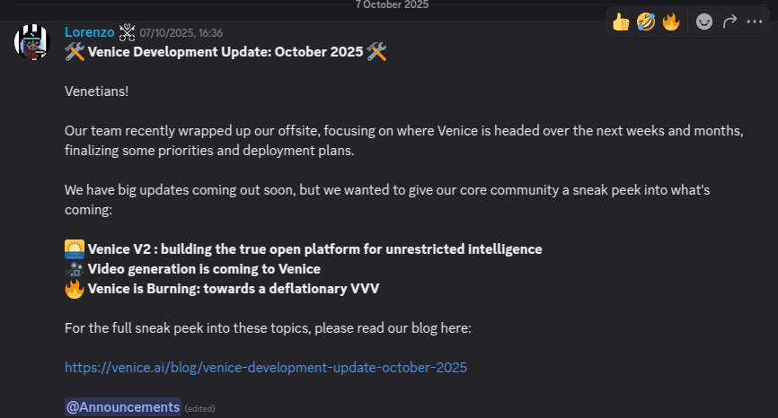
First we pumped...
The news sent VVV soaring - it gained in value by 36%.
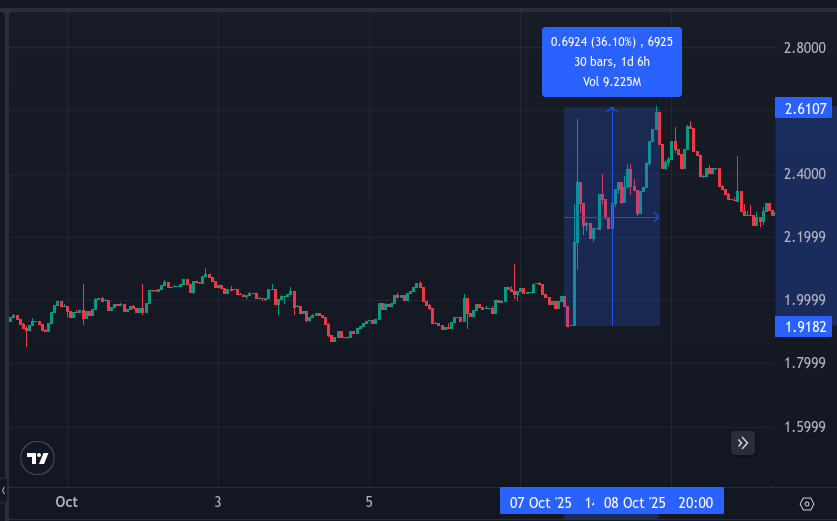
The reason the VVV price action was so good was because the announcement had other juicy news, my favourites being:
- The VVV inflation rate is being cut from 10M new tokens per year to 8M per year, starting 23 October 2025.
- 🔥 Venice announced a "buyback and burn" scheme starting early November based on October revenue.
A small nitpick from me is that they said "revenue". I'd be much more comfortable if the buy and burn used "profits", not revenue. This way we could be sure the model is sustainable.
Erik said:
The buybacks will occur as TWAPs over the subsequent month, then VVV from those buybacks will be burned.
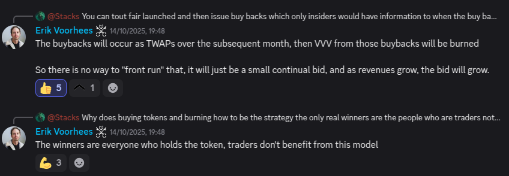
What does this mean? It means Venice is going to use a portion of their operating profits to buy VVV on the open market and then send it to a burn address. The buyback will create persistent buy pressure. The inflation reduction will reduce sell pressure. The burn will remove tokens from the supply.
There was fantastic news for DIEM as well:
- Venice have told us that for video generation, we'll need "credits". We can buy credits: $1 = 100 credits. Or we can buy DIEM and get daily credits: 1 DIEM = 100 credits per day. This is big news because it means DIEM is now useful for more than just Developers. It really enhances the utility of DIEM.
- Venice is no longer going to provide only open-source models, they are going to give access to commercial models as well. The best frontier models such as Sora 2 are coming to Venice! When combined with the new credit system, this gives DIEM more utility.
DIEM teleported from $125 to $250 on the news. It doubled in price over 2½ days! 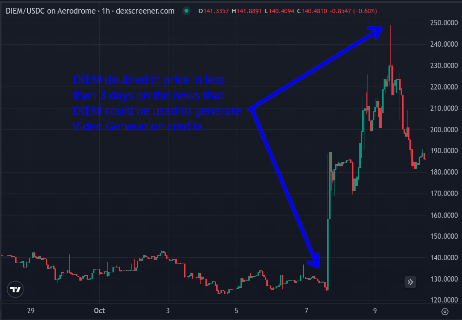
For me, the surprise wasn't that VeniceAI were adding Video, I think that was obviously on the cards. No, the surprise was that they were giving access to commercial models . So far Venice has used open source models. What it can do with open source models is magical. But the open source models haven't necessary been the best at performance. By giving access to commercial models, VeniceAI have shifted their stance. They are now going to let us, the user, choose between high privacy or high performance. This isn't a betrayal, it's simply a expansion of choice. Using OpenAI via Venice is still better for your Privacy than using OpenAI directly. All Venice users have their prompts aggregated so OpenAI can't pin a prompt to a individual. It's a bit like the difference between buying something directly from Amazon versus buying something from the market stall in town, who happened to buy their stock from Amazon. Amazon still knows the item was bought, but they don't know you were the one that bought it.
Then we dumped!
It's a real shame, but the wider market knocked the wind out of our sails. was a difficult day for many Crypto traders because it has been reported $19 billion of liquidations occurred. It's being called The "Black Friday" flush out. There was some vicious wicks down on some assets, that momentarily dropped in value far lower than what many expected in a worse case scenario. For people using these assets as collateral, their accounts went underwater and they got wiped out. Game over.
I'm hopeful that most people in the VeniceAI community were ok because our main liquidity pool is Aerodrome, a DEX which doesn't support leverage. Even so, the price of $VVV dropped 34% from $2.33 to $1.55: 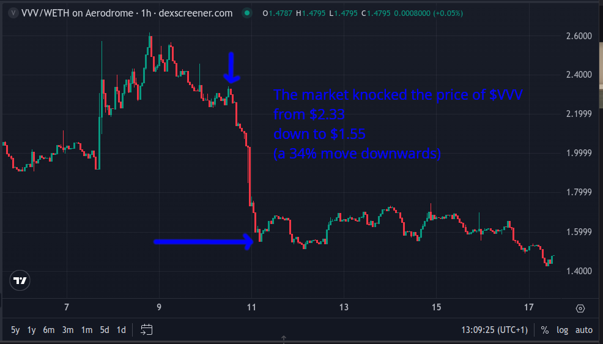
VVV often acts as beta to ETH, meaning when ETH goes down, VVV goes down more. The main liquidity pool for VVV is VVV-ETH, i.e. VVV is liquidity bonded to ETH.
If any VVV holders got liquidated, they might have been using hyperliquid which had a nasty wick down to $1.20, a 48% drop: 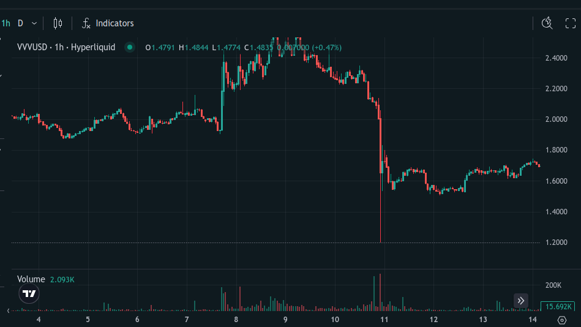
🏆 Congratulations to anyone who survived.
Still, the timing couldn’t have been worse. I guess Black swan events are never convenient. The crash killed the momentum. We’re now sitting lower than before all the great announcements — a real shame.
What next?
While discussing whether Venice would create a model specifically designed to be good at coding, Erik said:There are some product updates in the future which will not only address this concern, but will make our decision look very clear in hindsight.
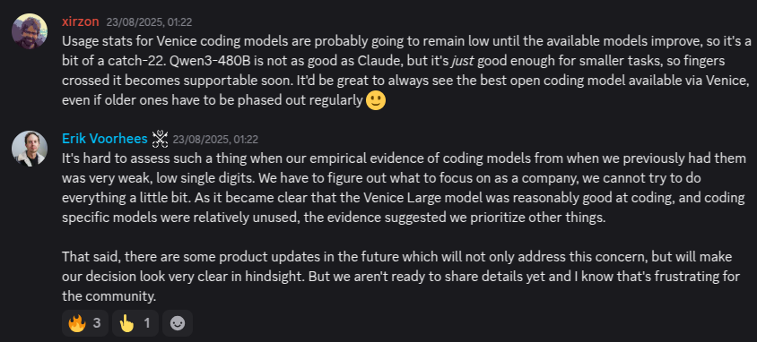 My guess at what Erik is hinting at is that Venice is planning to become a router for other models. I think, Venice will expose a bunch of models, perhaps a huge library of not only the best models, but also all the wackiest models, all the most specialised models. Rather than curating a small list of the most uncensored models, they might open the doors to all of them and let the user decide for themselves whether they want to select for minimum censorship or maximum quality? "Horses for Courses". I expect Venice will use their own credit system for usage of the different models such that they can pass on the cost of the third party model to the Venice users and make a small profit. I expect DIEM stakers to get daily credits and I think the utility of DIEM could really start to shine.
Autonomous agents probably want to use top-quality models and perhaps don't care as much about privacy as us humans. If I'm right, with DIEM, they will be able to. It could be a wild world if a agent running on distributed computers finds a way to make money and uses that money to buy DIEM so that it can get itself more thinking power and make more money. I'm not saying that's going to happen. But could it happen? Yes. And it's kind our how I think as a human too... I want to build a business that uses AI such that the more AI it uses, the better service the business can provide. The accumulation of DIEM becomes a strategy that loops back on itself.
As a programmer, I would love it if I could use code editor (such as Goose) configured with VeniceAI, configured with the best coding model of the time (GPT-5 Pro perhaps). Using DIEM as a "use it or lose it" payment model, rather than the normal "pay as you go" model would give me a feeling of AI abundance.
DIEM
The total Supply of DIEM is 30.38K (source: The DIEM contract address: 0xf4d97f2da56e8c3098f3a8d538db630a2606a024):
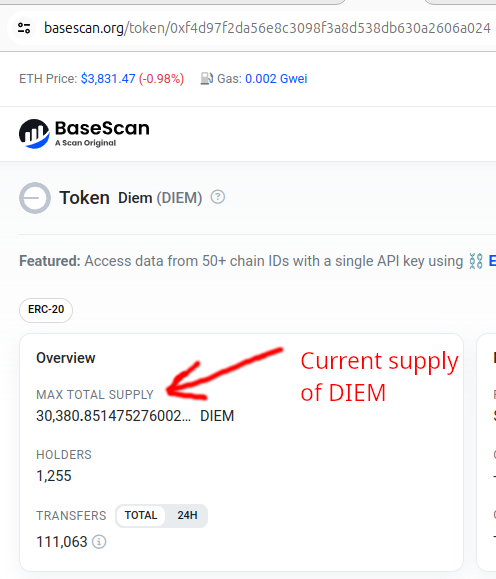
With 250.59 VVV you can mint 1 DIEM according to the mint rate curve: 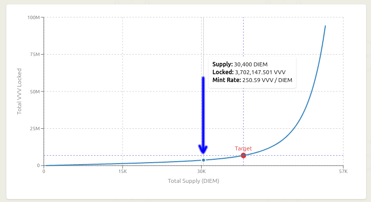 Notice that we are low on the curve and far from the target. The mint rate is in favourable territory. Yet, VVV holders don't seem to want to mint DIEM. Perhaps they don't want their VVV locked up, or perhaps they are waiting for the DIEM dollar value to be higher so they can mint and sell?
Currently the DIEM/VVV ratio is high, 1 DIEM buys 93 VVV. There seems to have been a structural change to DIEM. This chart shows DIEM priced in VVV: 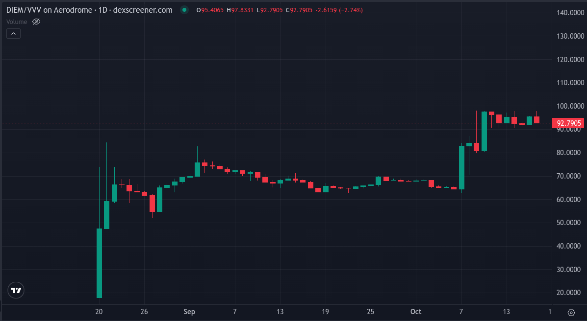 See how it looks like a staircase, up then flat, then up, then flat. It shows DIEM has been re-priced in terms of VVV. Probably this reflects that DIEM suddenly has more utility now that Video Generation can make use of it. I wonder if this means DIEM is going to get re-priced upwards every time Venice announces further utility? Or perhaps DIEM will come back down when the VVV buyback and burn starts?
In the pub last night I asked some friends: "imagine there was a asset that gave you $1 of AI compute per day, how much do you think such a asset would be worth?" Dan answered me $1000. He'd pay 3 years up front costs for the compute. And honestly? I get it. DIEM down here at $143 feels misunderstood. The market hasn't "gotten" the concept of DIEM yet. The market will only start to get it once more projects and tools start to make use of DIEM and once more Developer tutorials mention DIEM as a payment model. I'm not sure when this will happen, but it will happen at some point. The concept will click.
But.. ATL?
We're at All Time Low. $1 has never been able to buy more VVV: 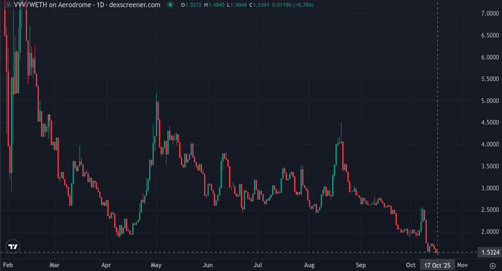 Especially when your unit of account is in BTC, which it probably should be, otherwise why not just buy BTC and do nothing? VVV has never bought less Bitcoin. The chart looks very good, if you have Bitcoin and not VVV: 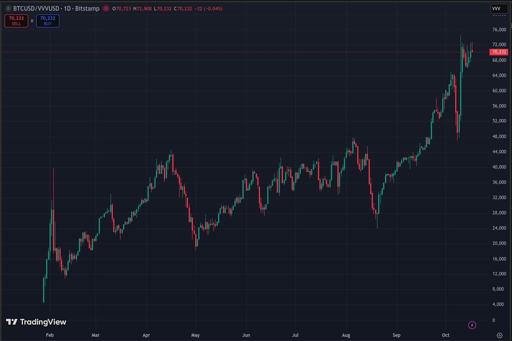
There's more sellers than buyers.
Why am I here?
Why don't I sell my VVV and DIEM and buy Bitcoin?
Because price isn’t the whole story.
- If you're a DIEM holder you get the utility of AI.
- If you're a VVV holder you get yield. And you have minting power so you can get access to DIEM whenever you need it.
- There's a team working to built a real product. They are working to add value to the Venice company, the tokens and the Venice ecosystem as a whole. If they execute well, and have a bit of luck, there's every chance to turn things around.
- Private and uncensored AI is important. It's worth building even without a view to profit maximization. BTC is a pretty tough hurdle rate. If no one started any new project because they didn't think they could beat BTC, things could get barren.
The tokenomics of VVV should get better in the future. Next week the daily emissions will reduce by 5500 VVV, but 22000 VVV will still be emitted per day. Venice said:
It will not be the last emission reduction.
They also said:
These are the first of several steps to drive VVV towards long-term deflation and in bringing VVV further into the core product.While balancing tokenomics with the other initiatives of the business, our goal with VVV is simple: VVV as a deflationary capital asset of Venice with native yield.
Something else positive on the horizon is the BASE token. CoinBase said a BASE token is coming. I expect Venice will get an allocation given they followed the instructions and “Built on Base”. I expect Venice will give back the BASE tokens to the Venice community in one form or another. Maybe via a new Venice ecosystem Builder incentive programme? Maybe they'll set up a new BASE-VVV liquidity pool? Maybe they'll airdrop some BASE to Venice users depending on their points system? Who knows.
I'm here because I think DIEM is a really interesting pricing model for AI. The way my brain works, I feel, is that I wake up with a certain amount of thinking time tokens, some more quality than others, and I burn through them throughout the day. Come the evening, I'm nearly out of tokens. I get a good rest and wake up full of tokens again. That's the DIEM model. It makes sense to me! If I was a AI agent, I would love to hold DIEM in my treasury and access Venice's marketplace of AI brains. As a AI Agent, I would be happy to know that if I ever felt like my thinking was getting a bit laboured, it's ok because tomorrow I'll be fully re-charged and ready to go.
I feel it's extremely early days but builders are going to figure it out and DIEM adoption is going to slowly rise. Once the market understands what I understand, DIEM is going to teleport up past $300 and the Venice ecosystem is going to be vibrant! The Venice product is going to go from strength to strength, DIEM is going to get spread far and wide and VVV will keep things spicy with it's volatility.
Who knows, with a bit of luck, we may even catch up with the BTC hurdle rate.